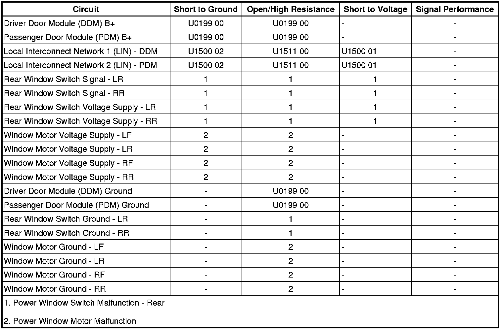

Power Windows Malfunction
Power Windows Malfunction
Diagnostic Instructions
* Perform the Diagnostic System Check - Vehicle (Initial Inspection and Diagnostic Overview) prior to using this diagnostic procedure.
* Review Strategy Based Diagnosis (Initial Inspection and Diagnostic Overview) for an overview of the diagnostic procedure.
* Diagnostic Procedure Instructions (Initial Inspection and Diagnostic Overview)provide an overview of each diagnostic category.
Diagnostic Fault Information

Circuit/System Description
The front and rear power windows are controlled by the driver door module (DDM) and front passenger door module (PDM). The DDM and PDM each contain power window switches that are integrated into the module. The DDM contains the master power window switch that controls all power window operations. The DDM supplies the left rear power window switch with a B+ voltage reference and signal circuit. The power window switch contained in the PDM controls the front passenger window operation only. The PDM supplies the right rear power window switch with a B+ voltage reference and signal circuit.
When the driver power window switch is activated to a desired position, the DDM examines the request and checks for messages from other vehicle control modules prohibiting window movement. If no prohibitive messages have been received, the DDM will send a LIN serial data message to the driver door window motor to move the window to the desired position.
When the DDM receives a request to operate one of the right side passenger windows from the master switch, a GMLAN serial data message is sent to the PDM. The PDM examines the request and checks for messages from other vehicle control modules prohibiting the window movement. If no prohibitive messages have been received, the PDM will send a LIN serial data message to the appropriate window motor to move the window as requested.
The DDM and PDM supply there respective rear power window switches with a B+ voltage reference and signal circuit. The rear power window switches contain separate resistors for each switch position. When a rear power window switch is activated, the associated door control module interprets the signal and checks for messages from other vehicle control modules prohibiting the window movement. If no prohibitive messages have been received, the door control module sends a LIN serial data message to the appropriate power window motor commanding the requested window position.
Diagnostic Aids
A short to ground on the B+ voltage reference circuits to the rear power window switches will cause the door control module to stop supplying the B+ voltage reference even after the fault is no longer present. When this condition exists, the corresponding door control module fuse may have to be removed to reset the door control module.
Reference Information
Schematic Reference
Moveable Window Schematics ([1][2]Electrical Diagrams)
Connector End View Reference
Component Connector End Views (Connector Views)
Description and Operation
Power Windows Description and Operation (Power Windows Description and Operation)
Electrical Information Reference
* Circuit Testing (Component Tests and General Diagnostics)
* Connector Repairs (Component Tests and General Diagnostics)
* Testing for Intermittent Conditions and Poor Connections (Component Tests and General Diagnostics)
* Wiring Repairs (Component Tests and General Diagnostics)
Scan Tool Reference
Control Module References (Programming and Relearning)
Circuit/System Verification
1. Ignition ON, observe the appropriate scan tool window switch parameters for the driver and front passenger window switches while activating all window switches to the UP, DOWN, and EXPRESS positions.
• If the readings do not change as the switches are activated, refer to Power Window Switch Malfunction - Front.
2. Operate the driver and front passenger windows with the driver power window switch to the UP, DOWN, and EXPRESS positions. The driver and front passenger windows should operate to the appropriate position as the switch is activated.
• If the windows do not operate as the switch is activated, refer to Power Window Motor Malfunction.
3. Operate each rear window with the driver power window switch to the UP, DOWN, and EXPRESS positions. The rear windows should operate to the appropriate position as the switch is activated.
• If the rear windows do not operate as the switch is activated, refer to Power Window Motor Malfunction.
• If the rear windows operate as the switch is activated, refer to Power Window Switch Malfunction - Rear.
Circuit/System Testing
Power Window Switch Malfunction - Front
Ignition ON, with a scan tool, observe the appropriate window switch parameters for the driver and front passenger window switches while activating all window switches to the UP, DOWN, and EXPRESS positions.
If the readings do not change as the switches are activated, replace the appropriate door control module.
Power Window Switch Malfunction - Rear
1. Ignition OFF, disconnect the harness connector at the inoperative rear power window switch.
2. Ignition OFF, test for less than 5.0 ohms of resistance between the rear power window switch ground circuit terminal 1 and ground.
• If greater than the specified range, test the ground circuit for an open/high resistance.
3. Ignition ON, test for 3.5 to 4.2 k ohms of resistance between the rear power window switch signal circuit terminal 4 and ground.
• If greater than the specified range, test the signal circuit for a short to voltage or an open/high resistance. If the circuit tests normal, replace the appropriate door control module.
• If less than the specified range, test the signal circuit for a short to ground. If the circuit tests normal, replace the appropriate door control module.
4. Ignition ON, test for B+ between the rear window switch voltage reference circuit terminal 3 and ground.
• If less than the specified range, test the voltage reference circuit for a short to ground or an open/high resistance. If the circuit tests normal, replace the appropriate door control module.
• If greater than the specified range, test the voltage reference circuit for a short to voltage. If the circuit tests normal, replace the appropriate door control module.
5. If all circuits test normal, test or replace the inoperative rear power window switch.
Power Window Motor Malfunction
1. Ignition OFF, disconnect the harness connector at the inoperative power window motor.
2. Ignition OFF, test for less than 5.0 ohms of resistance between the power window motor ground circuit terminal 4 and ground.
• If greater than the specified range, test the ground circuit for an open/high resistance.
3. Ignition ON, test for B+ between the B+circuit terminal 1 and ground.
• If the test lamp does not illuminate, test the B+ circuit for a short to ground or an open/high resistance.
4. If all circuits test normal, test or replace the inoperative power window motor.
Repair Instructions
Perform the Diagnostic Repair Verification (Verification Tests) after completing the diagnostic procedure.
* Front Side Door Window Switch Replacement (Front Side Door Window Switch Replacement)
* Front Side Door Window Regulator Replacement (Service and Repair)
* Rear Side Door Window Regulator Replacement (Service and Repair)
* Rear Side Door Window Switch Replacement (Rear Side Door Window Switch Replacement)
* Control Module References (Programming and Relearning)for DDM and PDM replacement, setup, and programming